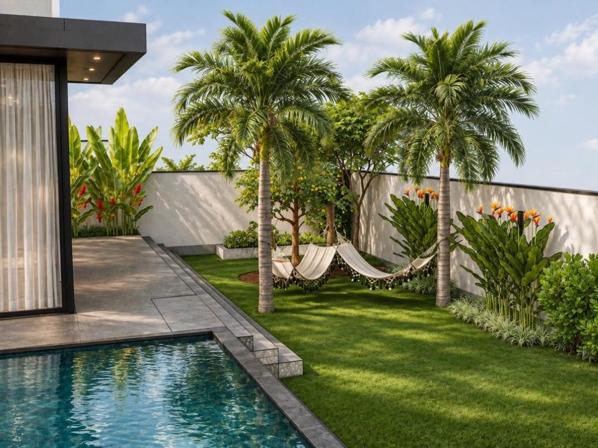
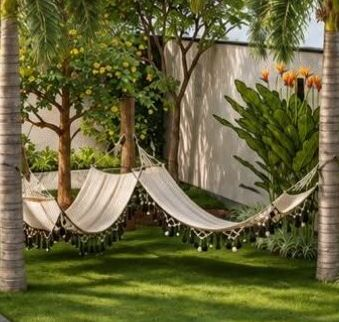
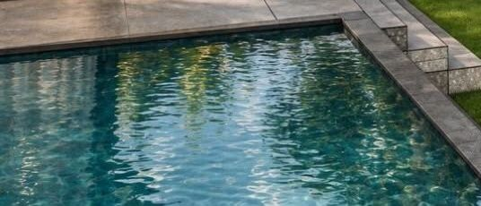

Pátio da Piscina
- Local
- Indaiatuba, SP
- Área
- 300 m²
- Ano
- 2026
- Status
- Projeto 3D
- Escopo
- Projeto paisagístico
Conceito
Um refúgio dentro de casa
O desafio foi transformar o quintal em uma extensão da sala de estar. Palmeiras de porte marcam os limites do gramado e criam sombra para o redário, convidando à permanência ao longo do dia.
Junto ao muro, camadas de estrelítzias, helicônias e folhagens criam um fundo verde contínuo que esconde o limite do terreno. O deck em pedra e a borda da piscina recebem plantas mais baixas, garantindo circulação livre e segura.
Espécies em destaque- Palmeira
- Estrelítzia
- Helicônia
- Ave-do-paraíso
- Grama-esmeralda



Agende uma conversa
Quer um jardim assim?
Conte sobre o seu espaço. Vamos entender o que você imagina e propor o melhor caminho para o seu projeto.